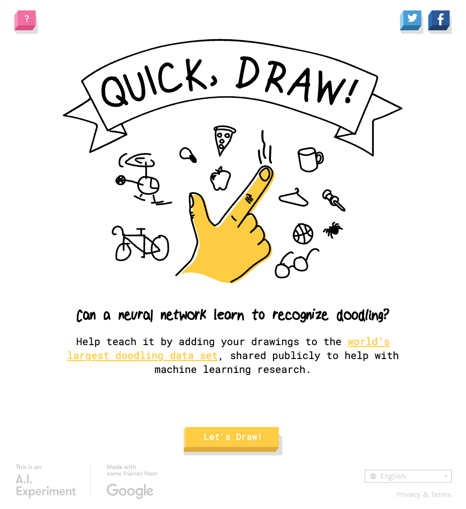
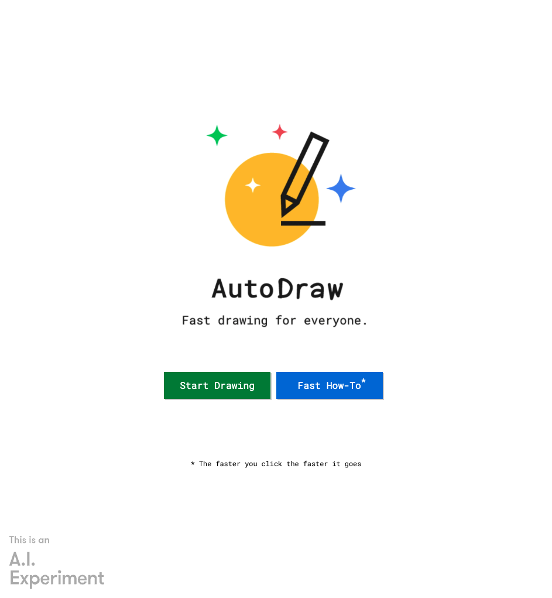

Doodle Forest
Plant flora and spawn fauna in a generative 10x10 grid.
Doodle Forest is a zen experiment that transforms one of the world’s largest collections of hand-drawn sketches into a playful, interactive ecosystem. By leveraging the Google Quick, Draw! dataset, the project allows users to "reforest" a digital grid with simplified representations of nature, exploring the boundary between human intent and machine-categorized data.
THE DATASET: GAMIFIED LABOUR
The project is built upon the Google Quick, Draw! dataset, a massive open-source library of over 50 million drawings across 345 categories. Originally collected through a global online game, the dataset is a byproduct of a "gamified" labor process: as players raced against a 20-second clock to draw a specific object, Google’s neural networks learned to recognize the essential strokes that define a "flower," a "tree," or a "lion."


A ZEN SCRAPER EXPERIMENT
For Doodle Forest, I scraped Google’s Quick Draw repository to extract specific subsets of flora and fauna sketches. While the original data was intended for training classification models, this experiment re-contextualizes the sketches as modular building blocks for a collaborative environment.
By placing these doodles onto a constrained 10x10 grid, the project moves away from the high-speed pressure of the original game toward a meditative experience. It highlights the charm and variability of human drawings by showing how thousands of people across the globe uniquely interpret the same simple organic forms—resulting in a forest that is at once digital, collective, and deeply human.